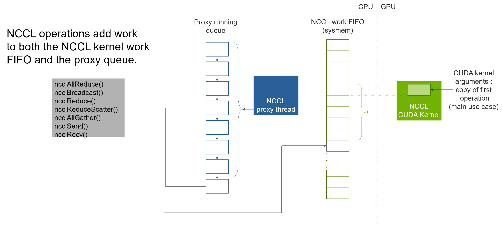
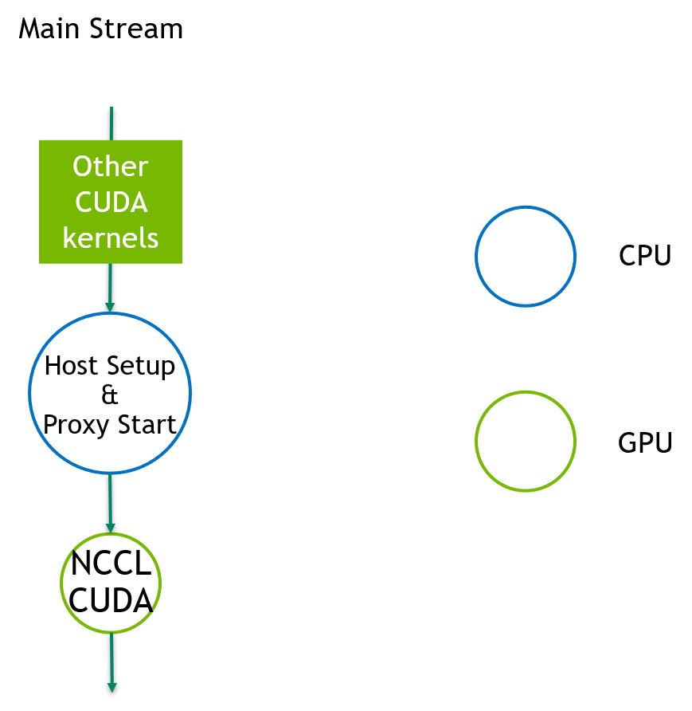
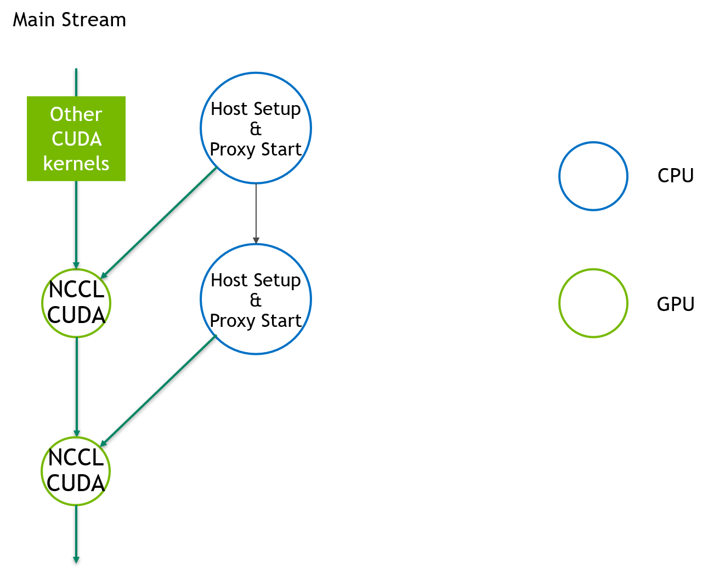

The goal is to have NCCL support CUDA graph when user uses CUDA graph at higher level.
This means adding the following capabilities to NCCL:
- ability to detect that it is in a graph capture
- ability to support graph capturing in NCCL enqueuing system
- modulizing NCCL host setup code such that it can be called back by CUDA graph

NCCL CUDA Kernel: Performs the NCCL operation, loading user data, summing with data coming from other GPUs, and sending the result to other GPUs
NCCL Proxy Thread: Performs all network operations, taking data from a CUDA kernel and transmitting it to the destination GPU.
Due to the lack of asynchronous host launch APIs in CUDA 11.2, the host setup callback is enqueued in the main stream as the CUDA kernel. This could lead to a bubble in the pipeline.

CUDA 11.3 provides an API to launch a host function as a node, without the need to put such node on any stream. Such node can become a new entrant point of the graph, avoiding the pipeline bubble. To avoid race condition between host callbacks, these host nodes need to be serialized.

NCCL Kernel arguments include a copy of the first operation to execute, which includes a variable index like the FIFO index.
Solution: for the purpose of low latency, we still pass the kernel argument of the first operation to CUDA graph. This is done at capture time. For the index, since we don't know it at capture time, we removed it from the kernel argument and let each CUDA channels read its own FIFO index and increase it linearly. This puts an end to the cross-channel workFifoTail alignment in the CPU code.
We need to decouple capture-time and dynamic-time preparation codes.
Solution: we use the following steps (and naming convention):
save: save info to a temporary queue (e.g. async colls, p2p)
setup: calculate work elem args and proxy args (capture-time CUDA graph operations)
enqueue: enqueue work elems into channel FIFOs and proxy FIFOs (run-time CUDA graph operations)
launch: launch kernel
Solution: CUDA 11.3 is providing a method to treat the parameter space as a CUDA object. By providing a delete function to this object and CUDA tracking its reference count, CUDA would be able to free it automatically. For CUDA 11.2, NCCL communicator would be responsible for cleaning the parameter space.
There is no corresponding graph API for cooperative CGMD launch.
Solution: we use the PARALLEL launch mode if we are using CGMD + graph. To do that we need to change the GROUP mode to a third mode (say GROUP_GRAPH) before launch and have it execute the same path as PARALLEL. Then we change it back to the GROUP mode after the launch.
Author : Ke Wen